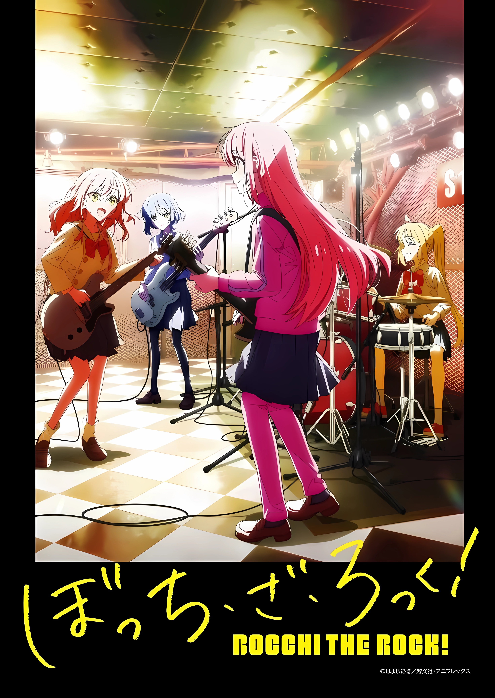

Bocchi The Rock!
(8.77)
Synopsis
Karena ingin berteman dan tampil live bersama sebuah band, Hitori "Bocchi" Gotou yang kesepian dan cemas secara sosial mendedikasikan waktunya untuk bermain gitar. Pada suatu hari yang menentukan, Bocchi bertemu dengan drummer lama Nijika Ijichi, yang mengundangnya untuk bergabung dengan Kessoku Band ketika gitaris mereka, Ikuyo Kita, kabur sebelum pertunjukan pertama mereka. Segera setelah itu, Bocchi bertemu dengan teman band terakhirnya—pemain bass yang keren Ryou Yamada.
Meskipun penampilan pertama mereka bersama-sama kurang memuaskan, para gadis itu merasa diberdayakan oleh kecintaan mereka yang sama terhadap musik, dan mereka segera bergabung kembali dengan Kita. Menemukan kebahagiaan dalam tampil, Bocchi dan teman-teman bandnya mencurahkan hati mereka untuk meningkatkan kemampuan sebagai musisi sambil memanfaatkan sebaik-baiknya hari-hari sekolah menengah mereka yang singkat.
[Ditulis oleh MAL Rewrite]
[Bocchi The Rock! PV]